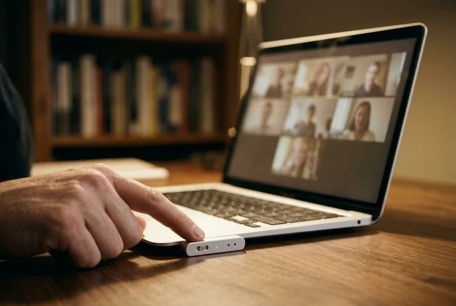

Why we’re making Rutta Bar
— [Founder name], [Role]
Rutta Bar plugs into the side of your Mac and picks up every voice at the table. No cable, no battery, one switch to mute.
The problem.
The built-in microphone sits behind the keyboard and points at whoever’s typing. Everyone else at the table comes through faint, if at all.
The person across the table sounds like they’re in another room.
Every keystroke lands in the recording, right on top of the conversation.
The phone is face-down on the table, and nobody remembered to press record.
The proof.
The same conversation, recorded two ways. Put on headphones and switch between them.
Built-in micMacBook Air · café table
Rutta BarSame table, same voices
Built-in micMacBook Air · meeting room
Rutta BarSame room, same voices
Built-in micMacBook Air · typing while talking
Rutta BarSame call, same keyboard
Recordings are unedited and captured on a [TBD] prototype.
The setup.
There’s nothing to set up, charge or pair. Drag the slider to see it go in.

It slides into the USB-C port nearest the palm rest and draws power from your Mac.
It shows up as a standard USB microphone, so it works in any app that uses one. [TBD: confirm driver-free]
A metal switch under your fingertip. The light on top goes out.
The switch.
Old-fashioned? Maybe. But you can find it mid-sentence without looking, and muted always means muted. The light next to the R on top tells the whole table what’s happening. Go on, slide it.

The light on top breathes green while the microphone is ready.
Interactive demo. Click the switch or drag it left to mute and right to unmute.
Works with the apps you already use.
Zoom, Google Meet, Microsoft Teams, FaceTime, Voice Memos, Granola, Otter and Fireflies.
Pair Rutta Bar with your favorite one. Better audio in means better notes out.
The manners.
A microphone at the table should never be a secret.
It glows on top whenever sound is going to your Mac, so the whole table knows.
A physical switch cuts the microphone. No menu, no guessing.
Rutta Bar doesn’t record or store anything. It’s a microphone. The app you choose decides what happens next.
Always let people know when you’re recording.
The moments.


Concept scenes. Final photography is coming from the content team.
The object.
An anodized shell in four finishes that match MacBook Air, a metal switch, one light and four small sound openings.
Drag to turn it around, or pick a detail.

Design targets, to be confirmed on prototypes.
— [Founder name], [Role]
The plan.
Waitlist members get first access to prototype testing and early pricing.
Industrial design and fit studies
Now · sound and fit on real Macs
Date to be announced
Date to be announced
We haven’t set a price yet. Waitlist members will hear first, and get early pricing.
We’re testing prototypes now. We’ll share dates with the waitlist as soon as we have them.
No. Rutta Bar works as a standard USB microphone, so you choose it in the app you already use, like Zoom, FaceTime or your notetaker.
No. Rutta Bar has no storage and no connection of its own. It only sends sound to your Mac while it’s plugged in and unmuted.
It’s designed around MacBook Air. We’ll confirm other devices after prototype testing.
It uses the USB-C port nearest the palm rest and leaves the other USB-C port and MagSafe free. Clearance around neighboring plugs is part of our prototype tests.
We’ll share pickup and noise details once prototype testing confirms them.
Join the waitlist for early access, prototype testing invites and early pricing. We’ll only email you about Rutta.
You’re on the list!
Optional, but it helps us build the right thing.
Know someone who’d want one?
Preview: sign-ups aren’t connected to an email service yet and stay in this browser.